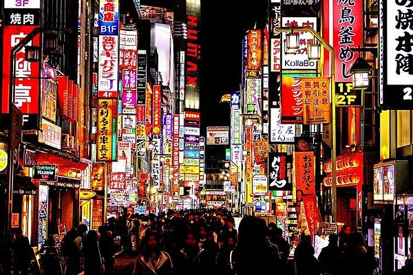
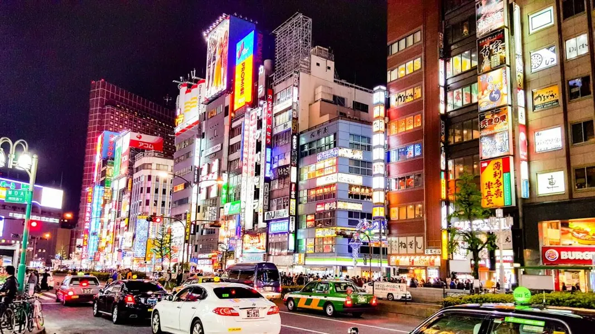

Image 1

Image 2

Image 3
Shinjuku, Tokyo, Japan
Shinjuku, Tokyo holds a special place in me because it is renowned as the city where I always dreamed to go. I fantasize about bright lights against the background of busy streets and some hidden beautiful places. I imagine what it will be like walking through its alleys, discovering new adventures, and taking it all in. Even without going there, he has a bit of awe in me.
By Subway:
Walking Distance: Kabukicho is just a few minutes away from Shinjuku Station.